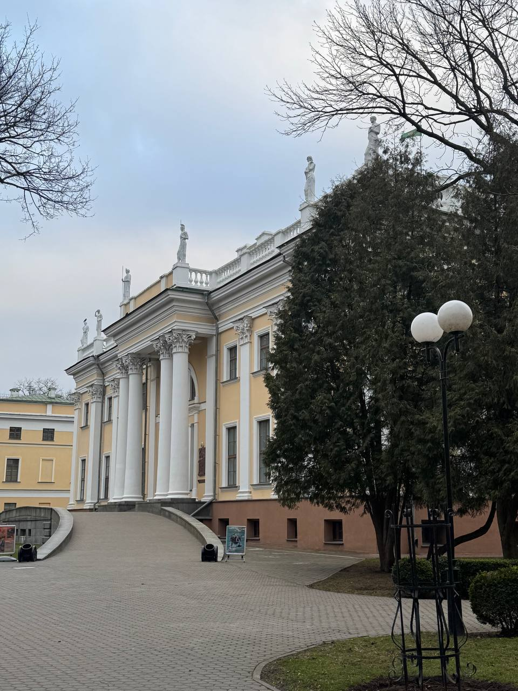
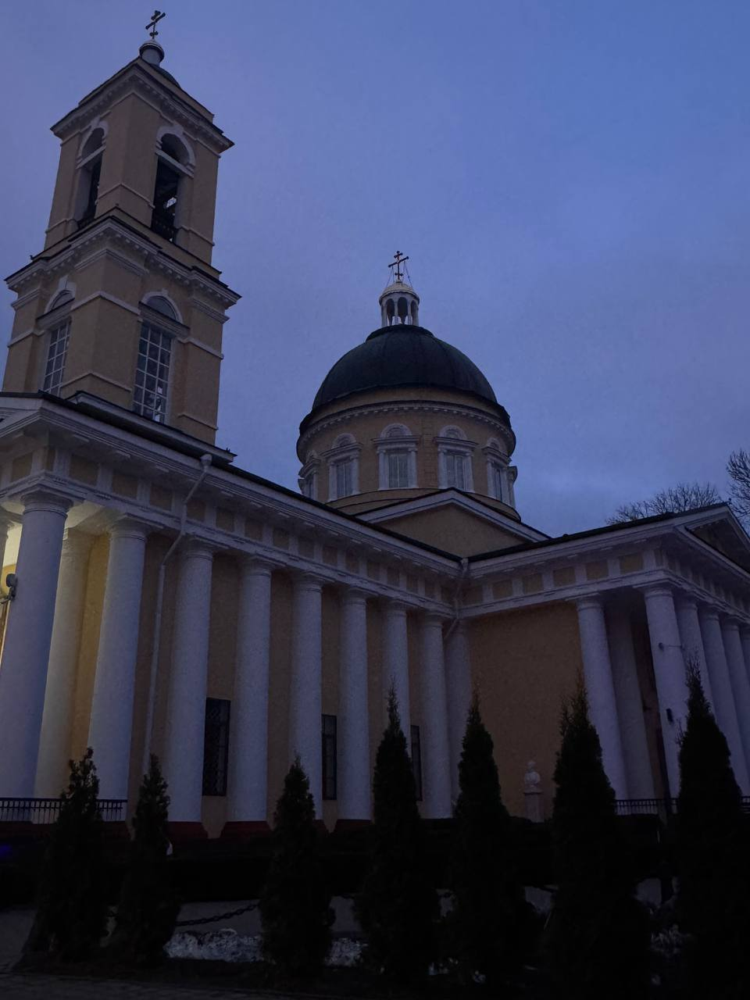
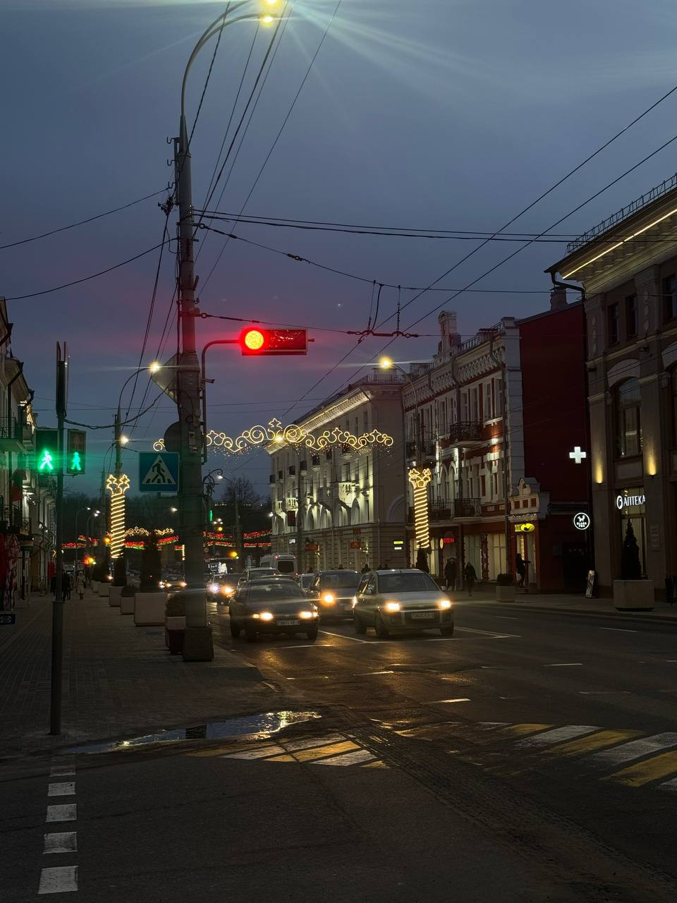
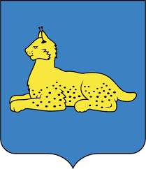
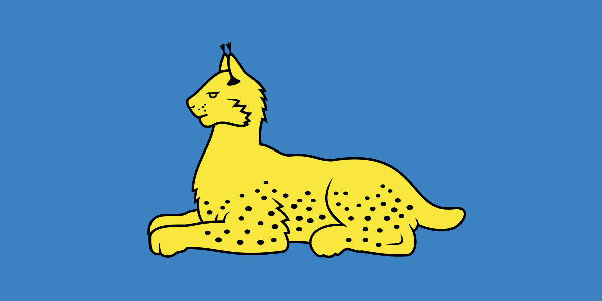
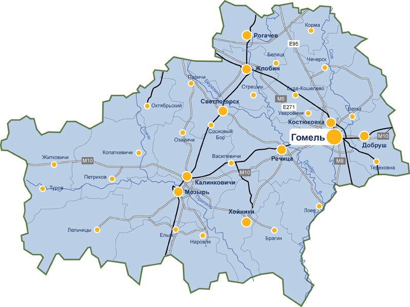
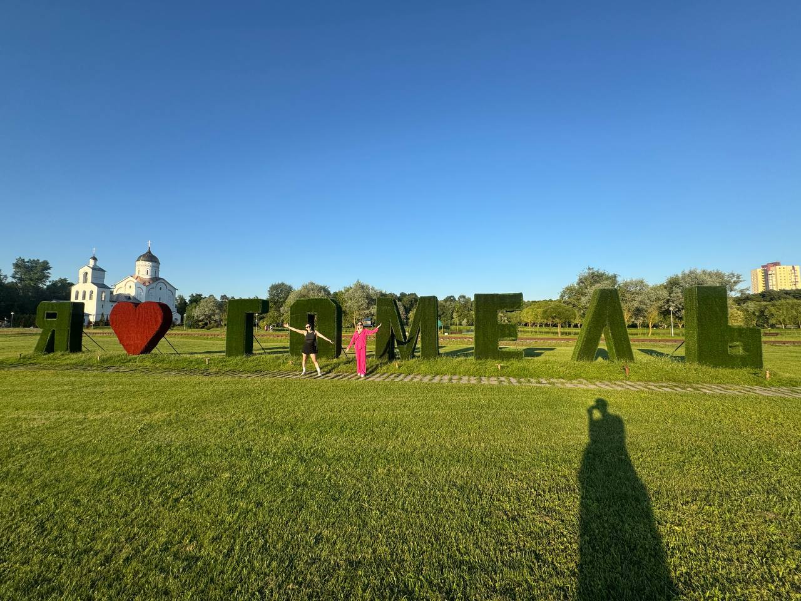
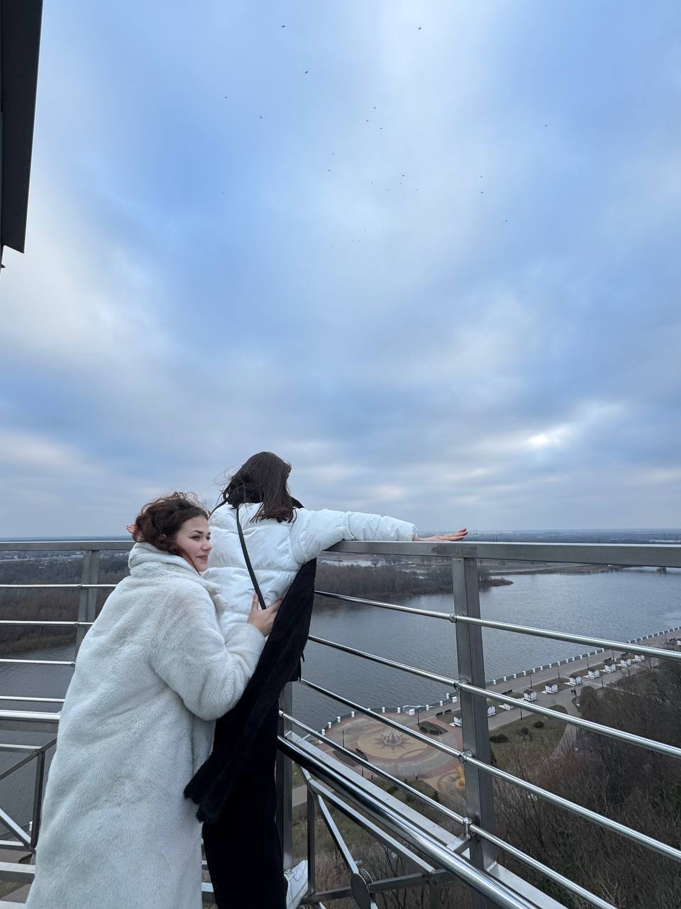

<!DOCTYPE html>
<html></html>

<head>
    <meta charset="UTF-8">
    <meta name="viewport" content="width=device-width, initial-scale=1.0">
    <title>Гомель - город над Сожем</title>
        <link rel="stylesheet" href="style.css">
</head>

<body>
    <div class="container">
        <header>
            <h1>Гомель</h1>
            <p class="subtitle">Город над Сожем - жемчужина Полесья</p>
        </header>

        <section id="history">
            <h2>История города</h2>
            <div class="history-content">
                <div>
                    <p><strong>Гомель</strong> - один из древнейших городов Беларуси, впервые упоминается в Ипатьевской
                        летописи в 1142 году.</p>
                    <p>Город имеет богатую историю, находясь на перекрестке торговых путей между Европой и Азией. В
                        разное время Гомель входил в состав Киевской Руси, Великого княжества Литовского, Речи
                        Посполитой, Российской империи.</p>
                    <p>Особый расцвет города связан с родом Румянцевых и Паскевичей, которые превратили Гомель в один из
                        красивейших городов региона.</p>
                </div>
            </div>
        </section>

        <div class="divider"></div>

        <section id="attractions">
            <h2>Достопримечательности</h2>
            <div class="attractions-grid">
                <div class="attraction-card">
                    <h3>Гомельский дворцово-парковый ансамбль</h3>
                    <p>Жемчужина города - дворец Румянцевых-Паскевичей с прекрасным парком</p>
                    <div class="bottom">
                        
                    </div>
                </div>
                <div class="attraction-card">
                    <h3>Петропавловский собор</h3>
                    <p>Один из старейших храмов города, построенный в начале XIX века</p>
                    <div class="bottom">
                        
                    </div>
                </div>
                <div class="attraction-card">
                    <h3>Улица Советская</h3>
                    <p>Самая старая и красивая улица города</p>
                    <div class="bottom">
                        
                    </div>
                </div>
            </div>
        </section>

        <div class="divider"></div>

        <section id="symbols">
            <h2>Символы города</h2>
            <div class="symbols-container">
                <div class="symbol">
                    
                    <h3>Герб</h3>
                    <p>Французский щит с изображением рыси</p>
                </div>
                <div class="symbol">
                    
                    <h3>Флаг</h3>
                    <p>Прямоугольное полотнище с гербом города в центре</p>
                </div>
            </div>
        </section>

        <div class="divider"></div>

        <section id="location">
            <h2>Расположение на карте</h2>
            <div class="map-container">
                
                <p>Гомель расположен на юго-востоке Беларуси, на берегу реки Сож</p>
            </div>
        </section>

        <div class="divider"></div>

        <section id="news">
            <h2>Новости города</h2>
            <div class="news-grid">
                <div class="news-card">
                    <h3>Реконструкция центральных улиц</h3>
                    <p>Начались работы по благоустройству пешеходной зоны в центре города</p>
                    </div>
                <div class="news-card">
                    <h3>Новый культурный центр</h3>
                    <p>В Гомеле открылся современный арт-пространство для молодежи</p>
                </div>
                <div class="news-card">
                    <h3>Спортивные достижения</h3>
                    <p>Гомельские спортсмены завоевали медали на международных соревнованиях</p>
                </div>
            </div>
        </section>

        <div class="divider"></div>

        <section id="current">
            <h2>Город сейчас</h2>
            <p>Гомель - второй по величине город Беларуси, важный промышленный и культурный центр.</p>

            <div class="economy-stats">
                <div class="stat-card">
                    <div class="stat-number">500+</div>
                    <p>промышленных предприятий</p>
                </div>
                <div class="stat-card">
                    <div class="stat-number">10</div>
                    <p>высших учебных заведений</p>
                </div>
                <div class="stat-card">
                    <div class="stat-number">100+</div>
                    <p>культурных учреждений</p>
                </div>
                <div class="stat-card">
                    <div class="stat-number">200+</div>
                    <p>образовательных учреждений</p>
                </div>
            </div>
        </section>

        <div class="divider"></div>

        <footer id="creative">
            <h2>Вика в Гомеле</h2>
            <div class="gallery">
                
                
            </div>
        </footer>
    </div>
</body>

</html>